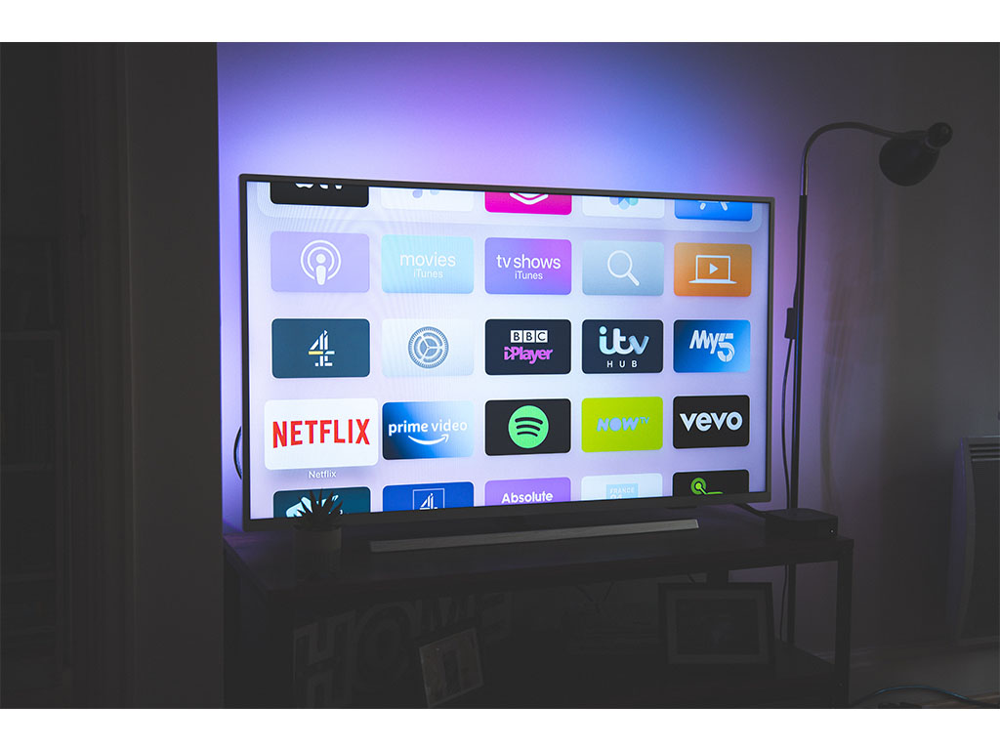

In today’ s ever-evolving world of technology, streaming has become one of the biggest means of providing entertainment to the masses. From videos to music to films, there are infinite amounts of content that is all available at our fingertips. The choices are limitless, but how does it all work? What enables us to be able to have access to hours upon hours of music and movies to enjoy? MU is an educational website that will focus on streaming in the context of music and how it has shaped the way we listen to music.
What is Streaming?
Streaming has become a new way for people to consume music and media. Streaming can be defined as listening to music (or watching videos) in real time, meaning that there is no file to download as it is a continuous stream of data. Some companies have free services which still work but consumers can pay for better quality services, such as no ads, better sound quality etc.
How Streaming Works
Streaming works as a continuous transmission of media files that are sent from a server that is then sent to a client. With the invention of streaming, the audio file can be played through the client and stored remotely which can be transmitted through an internet connection. Streaming has enabled people to consume media, whether it be music, videos, television or film on their own terms, creating flexibility for people to listen and watch whatever they want, whenever they want.
Packets and Information
Similar to other data that can be sent through the internet, audio and visual files are broken into separate packets and information. Each packet that is created, contains a small portion of the file. When an audio or video player on the client receives the file, the client takes the small portion of the file and converts it into audio or video.
However, depending on the reliability of the client's connection to the internet, streaming content may cause buffering. Buffering is caused by the packets of the file being lost due to an unstable connection to the server that is sending the packets. This can cause the audio or video file that the client is attempting to play to buffer, which can cause the file to stop playing due to not receiving the file from the server.

Examples of Streaming
Since the population boom of streaming, several platforms have been created for users to consume music and media. All platforms can provide various music and videos that people are able to sign up for their services. Some streaming platforms include Spotify, which includes music and podcasts. Apple Music which has music and provides its own radio stations that can be catered to different genres of music. Netflix, that was one of the first streaming platforms that become popular, with creating its own original television series and films.